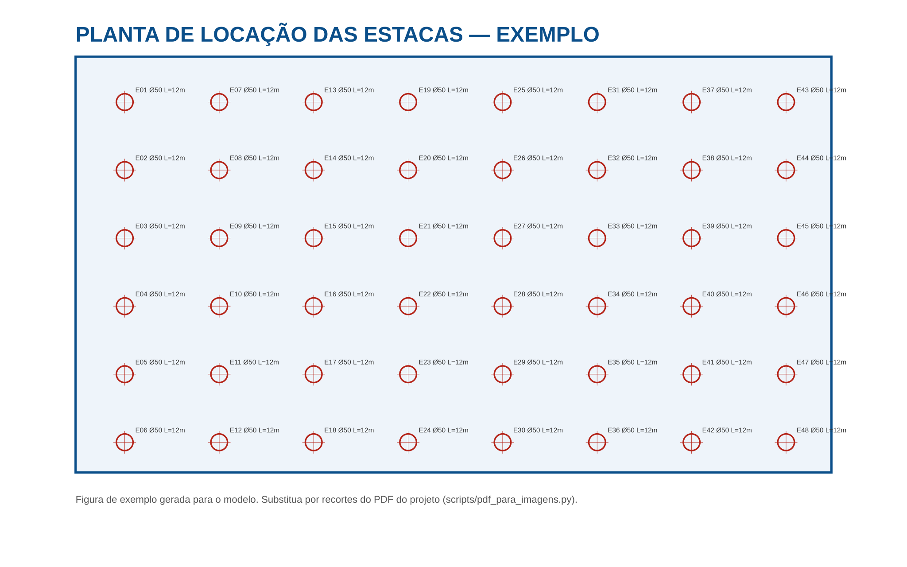
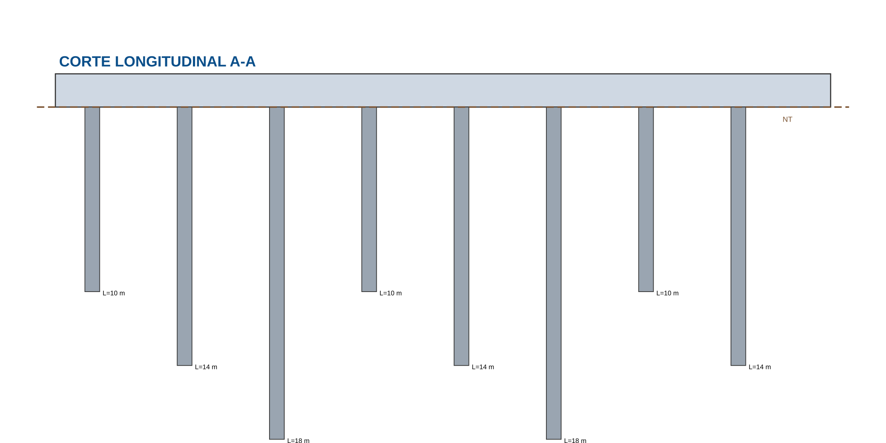
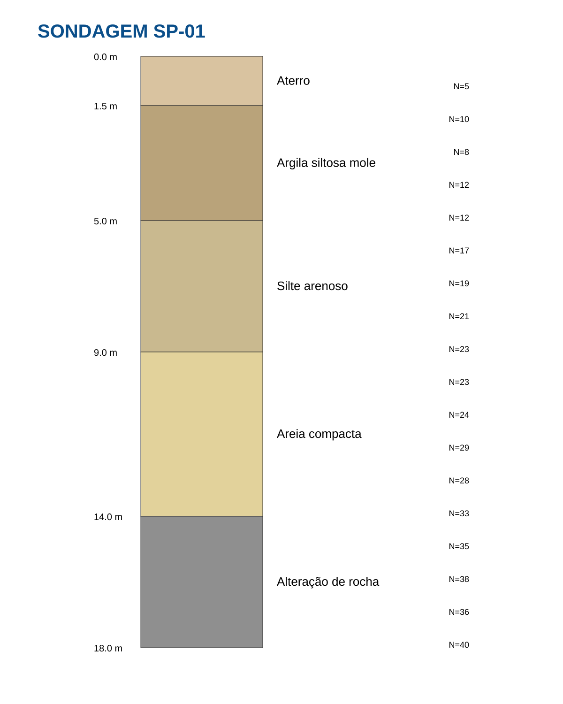

100%
roda/pinça = zoom · arraste = mover · duplo clique · Esc
Escopo, quantitativos, prazos e condições de pagamento
O que será executado, em números
Planta de locação das estacas e quantitativos por módulo

| Item | Qtd. |
|---|---|
| Estacas Ø 40–50 cm | un |
| Concreto | m³ |
| Aço (~100 kg/m³) | kg |
| Fôrma | m² |
Estacas de 6 a 16 m conforme sondagens
Fonte: projeto executivo de fundações (exemplo).
Corte longitudinal do módulo e perfil de sondagem


Três blocos do mesmo tamanho: traçado, características, interferências
| Item | Linha A | Linha B |
|---|---|---|
| Extensão | 4,2 km | 2,8 km |
| Diâmetro | DN 600 | DN 400 |
| Material | FoFo | PEAD |
Como o dinheiro entra — fluxo padrão do contrato
Ponto para a diretoria: necessidade de caixa nos primeiros ~70 dias.
Vale somente para os itens listados no anexo do edital
Limites obrigatórios do cliente — não é o planejamento detalhado
Linhas tracejadas vermelhas = marcos obrigatórios do contrato.
O que a diretoria precisa decidir hoje